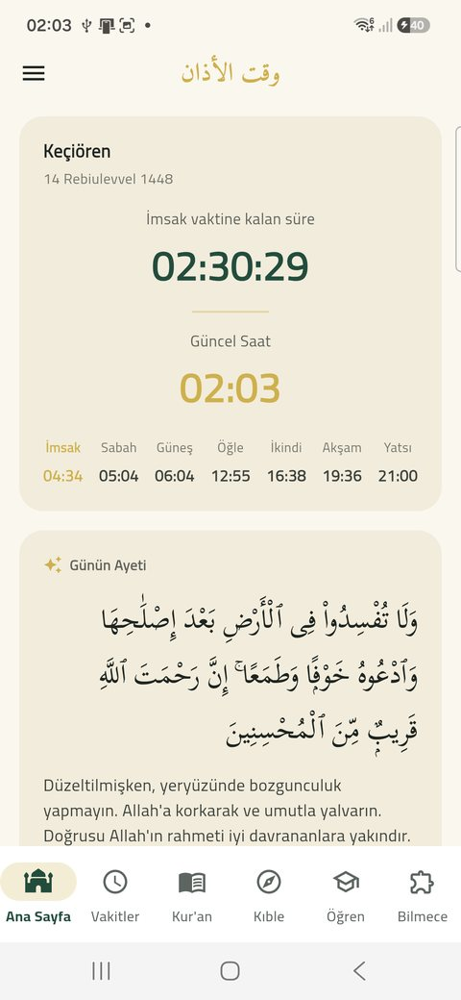
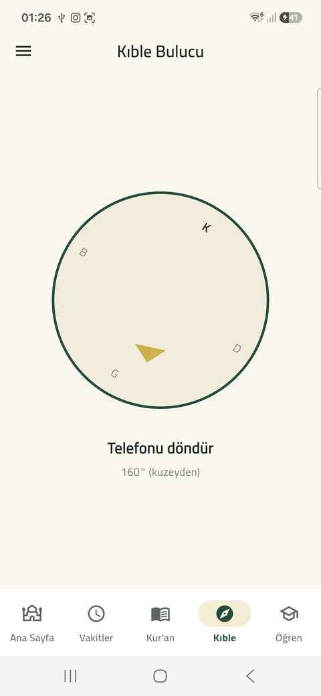
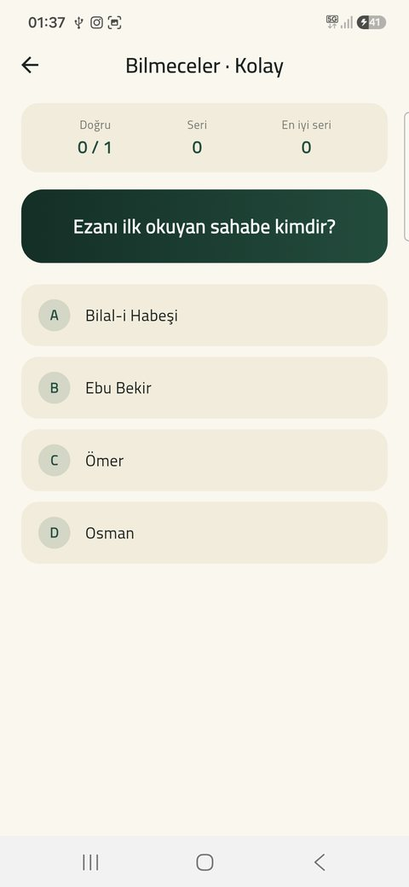

Namaz vakti · Kur'an · Kıble
Ezan Saati; namaz vakitlerini, ezan bildirimlerini, Kur'an-ı Kerim'i, kıble yönünü ve Kur'an öğrenmeyi tek bir sade uygulamada toplar. Vakitler, seçtiğin il ve ilçe için Diyanet İşleri Başkanlığı'nın yayınladığı verilerle gösterilir.
Günün seyri
Örnek: Ankara / KeçiörenNoktalar vakitlerin gün içindeki gerçek yerlerini gösterir — bu yüzden şafak vakitleri birbirine yakın kümelenir. Yayın parlak bölümü güneşin ufkun üzerinde olduğu süredir.
Neler var
İl ve ilçe seçimiyle Diyanet verilerine uygun yedi vakit, sonraki vakte saniye saniye geri sayım ve aylık vakit listesi.
Her vakit için ayrı ayrı: vakit girdiğinde bildir, istersen 45 dakika önce hatırlat. İstemediğin vakti tek dokunuşla kapat.
Uthmani hatlı Arapça metin, Diyanet ve Elmalılı mealleri, İngilizce ve Almanca çeviri, altı hafızdan ayet ayet sesli okuma.
Cihazın pusulasıyla anlık kıble yönü; yön tuttuğunda ibre renk değiştirerek haber verir.
Arap alfabesinin 28 harfini dinle, sonra mikrofona söyleyerek telaffuzunu dene.
Kolay, orta ve zor seviyede 320'den fazla dini bilgi sorusu. Havuz sürekli karıştığı için sorular bitmez.
Uygulamadan



Kaynaklar
Uygulama içerik üretmez; güvenilir kaynakları bir araya getirir ve kaynağını açıkça belirtir.
Gizlilik politikası için bu sayfaya bakabilirsiniz.